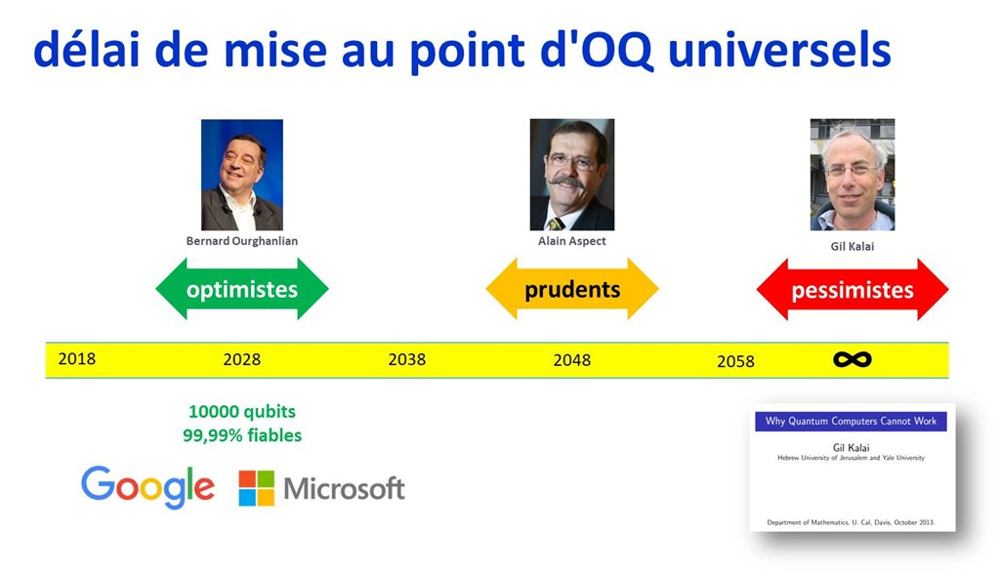

Cette veille technologique a été effectuée dans le cadres du module d'enseignement Nouvelles Technologies de l'Information et de la Communication de l'école Centrale de Lyon.
Le sujet choisi pour cette veille est l'ordinateur quantique et en particulier ses applications et perspectives d'avenir.
Présentation rapide des grands principes caractérisant l'ordinateur quantique.
Entre Google et IBM, à quel niveau sont actuellement les ordinateurs quantiques ?
Les applications et perspectives d'avenir de l'ordinateur quantique dans les domaines de la cryptographie et de l'IA.
Les sources utilisées pour cette veille.
La superposition d'état est à la base du fonctionnement des qubits et des capacités supérieures des ordinateurs quantiques. La superposition quantique est la capacité qu'à une particule quantique (telle qu'un photon ou un electron) à être dans plusieurs états à la fois. Par exemple, c'est le cas pour le sens de magnétiqation du spin de l'électron (cf. image ci-dessous).
Le nom "qubit" est la contraction des mots quantum et bit. C'est un état quantique qui représente la quantité d'information fondamentale dans un ordinateur quantique. Il est à comparé au bit pour les ordinateurs classiques. Par contre là où un bit classique est soit dans l'état 0 soit dans l'état 1, le qubit lui est la superposition de deux états nommés |0> et |1> (que l'on prononce ket 0 et ket 1), ce qui représente une infinité d'état. En effet on définit l'état d'un qubit par α.|0> + β.|1> avec α et β des nombres complexes vérifiant | α |² + | β |² = 1. α est la probabilité de l'état |0> et β est la probabilité de l'état |1>.
Dans un ordinateur quantique le résultat n'est pas deterministe comme dans un ordinateur classique mais probabiliste. C'est pourquoi les grandes capicités des ordinateurs quantiques ne conviennent pas à tous les types de problèmes.
IBM a annoncé au CES 2019 son nouvel ordinateur quantique : le Q System One. Ce dernier est composé de 20 qubits. A l'instar des précédents ordinateurs quantiques développés par IBM, il pourra être utilisé sur le cloud. Les entreprises auront ainsi la possibilité de louer ses capacités de calculs pour un certain temps. Il semblerait qu'il soit également possible d'en acheter un dans un avenir proche mais, bien que le prx n'est pas encore été dévoilé, cela sera certainement un énorme investissement qui ne sera pas abordable pour les petites entreprises. IBM a annoncé ce nouvel ordinateur quantique comme le premier ordinateur quantique commercialisable. Il y a plusieurs raisons à cela : premièrement le Q System One est un système complet et pas seulement un composant séparé ou plusieurs petits éléments séparés reliés les uns aux autres uniquement utilisables dans un laboratoire comme c'était le cas précédemment. Ce qui permet donc de le déplacer et de le vendre. Un autre avantage de ce système est qu'il est modulaire, c'est à dire qu'il est possible de remplacer seulement certains composants, c'est un énorme avantage actuellement, puisqu'il serait possible lors d'une innovation de ne racheter que le composant nécessaire sans avoir à racheter un ordinateur quantique complet, ce qui représente une importante économie d'argent.
Comme mentionné précédemment IBM proposait déjà l'utilisation de leurs ordinateurs quantiques sur le cloud. Soit à travers un framework pour python permettant d'utiliser les capacités des ordinateurs quantiques : Qiskit, soit à travers une interface graphique disponible sur leur site.
Google a sorti en 2018 Bristlecone un ordinateur quantique de 72 qubits. Toutefois le nombre de qubit ne fait pas tout, le pourcentage d'erreur des qubits est également très important (le résultat étant probabiliste). Pour le Bristlecone l'erreur est entre 0.1% et 1% selon les sources. Il est pour l'instant impossible de comparer au Q System One qui n'a pas dévoilé son taux d'erreur.
L'un des domaines d'application possible des ordinateurs quantiques est la cryptographie. Et en particulier pour cracker certains algorithmes. L'un des principaux algorithmes visés est le RSA. C'est un algorithme de cryptement de type asymétrique.
Dans un algorithme de cryptement asymétrique il y a deux types de clés, une clé privée et une clé publique. Comme leur nom l'indique la clé privé va être gardé pour soi tandis que la clé publique sera communiquée. Supposons un échange entre deux personnes, Florian et Mickaël si on reprend l'image précédente. Si Florian souhaite que Mickaël lui envoie un message sécurisé, il va créer deux clés avec son algorithme, une clé privé, qu'il garde pour lui et une clé publique qu'il envoie à Mickaël. Mickaël va ensuite utiliser la clé publique pour crypter son message puis l'envoyer à Florian. Florian pourra ensuite décrypter le message reçu à l'aide de sa clé privée. Le point important est que même si une personne mal-intentionnée récupère la clé publique, il lui sera impossible de décrypter le message. Un ordinateur quantique pourrait quant à lui cracker la clé privée et ainsi décrypter le message. Pour mieux comprendre où se situe la faille exploitée par les ordinateurs quantiques, il faut comprendre comment les clés privées et plubliques sont créées dans l'algorithme RSA.
Tout d'abord l'algorithme choisit deux très grand nombres premiers p et q. Soit N, le produit p x q. Soit d et e, deux nombres calculé avec p, q et N. Alors N et e représente la clé publique et d la clé privée. Or comme on connait la formule de e et d, il suffit de trouver p et q pour obtenir la clé privée. Il faut alors factoriser N en nombre premiers. Actuellement, avec les ordinateurs classiques et leurs capacité de calculs, il est impossible de factoriser un si grand nombre. En effet les algorithmes classiques disponibles ont une complexité exponentielle en fonction de nombre de chiffres du nombre à factoriser.Toutefois, pour les ordinateurs quantiques il existe un autre algorithme : l'alogorithme de Shor, qui lui a une complexité proportionnelle au cube du nombre de chiffres du nombre à décomposer. Cela permettrait de cracker le RSA en un temps raisonnable.
Le système de Bitcoin et la Blockchain en général utilise plusieurs algorithmes de cryptement, la plupart n'ont rien à craindre, mais un en particulier (ECDSA) est sensible de la même manière que le RSA (par une factorisation en nombre premiers). Cet algorithme est utilisé pour signatures. S'il est cracké, il y aurait possibilité de se faire passer pour quelqu'un d'autre dans une transaction.
Il faut toutefois mitiger ces menaces. En effet, les ordinateurs quantiques actuels sont loin de pouvoir fournir une puissance de calcul suffisante pour ces applications. Il faudra attendre encore plusieurs années voir plusieurs décennies avant que les ordinateurs quantiques posent une réelle menace sur les algorithmes de sécurité. Il y a donc encore le temps de remplacer ces technologies pouvant être crackées dans le futur par d'autre qui resteront sécurisées. Par exemple dans le cas du Bitcoin il serait possible d'utiliser une couche de sécurité en plus (comme l'AES) ou de demander des temps de validation plus long.
L'ordinateur pourrait également être très utile dans le domaine de l'IA. Premièrement grâce à ces capacité de calculs bien plus importantes que les ordinateurs classique. Avec ses capacité de superposition d'état, la recherche et le parcours d'une base de donnée serait radicalement plus rapide. C'est pourquoi l'ordinateur deviendrait très utile dans le domaine du Big Data. Google mise actuellement sur l'association des ordinateurs quantiques et l'IA avec leur programme de recherche AI Quantum, il font par exemples des recherches sur des réeaux de neurones avec superposition d'états.
Bien que cela ne soit pas une application des ordinateurs quantiques, d'autres recherches intéressantes sont actuellement en cours sur l'alliance entre ordinateurs quantiques et IA. En effet, l'IA et des réseaux de neurones pourraient être utilisés pour la réduction d'erreur des ordinateurs quantiques. En effet, les qubits sont très instable et l'environnement provoque de légères modifications qui mène à des erreurs. Si l'ordinateur quantique était muni d'une IA qui apprendrait les effets de l'environnement, elle pourrait elle même pallier, compenser les erreurs.
Bien qu'actuellement les géants tels que Google ou IBM annoncent l'arrivée des premiers ordinateurs quantiques, ces derniers ont pour l'instant peu de capacité. En effet, on peut encore simuler les capacité des ordinateurs quantiques actuels sur des ordinateurs quantiques. On reste encore très loin des applications déjà prévues pour eux. Le monde scientifique est assez partagé sur l'avenir des ordinateurs quantiques et la rapidité avec laquelle nous arriveront à des ordinateurs quantiques assez puissants pour des applications réelles dans les domaines présentés.
Les plus optimistes (principalement Google, IBM et autres géants) prévoit cette révolution quantique dans une dizaine d'années tandis que les plus pessimistes pensent que les difficultés actuellement rencontrées (instabilités des qubits, erreur) seront insurmontables et que la révolution quantique n'est qu'un rêve qui ne prendra jamais réalité.

Temporibus autem quibusdam et aut officiis debitis aut rerum necessitatibus saepe

Temporibus autem quibusdam et aut officiis debitis aut rerum necessitatibus saepe

Temporibus autem quibusdam et aut officiis debitis aut rerum necessitatibus saepe

Temporibus autem quibusdam et aut officiis debitis aut rerum necessitatibus saepe

Temporibus autem quibusdam et aut officiis debitis aut rerum necessitatibus saepe